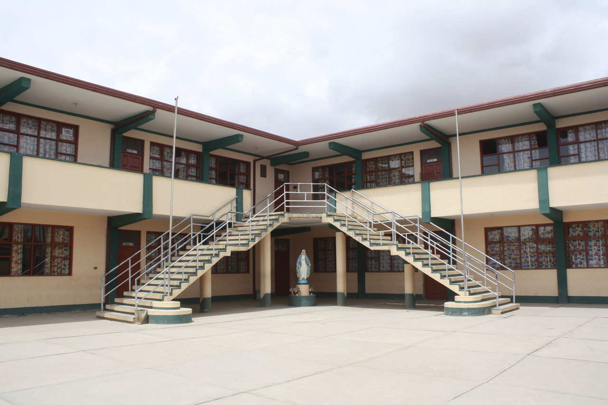

Ubicación
¡Ven a visitarnos!
Nos encontramos en un lugar fácil de ubicar. ¡Te esperamos con mucho gusto para que disfrutes nuestros deliciosos dorayakis!
Nuestra dirección
Dirección:
C.Sta.Barbara, Claudina Thevenet y arce
Colegio Jesús de Nazareth
Oruro - Bolivia
Horarios de atención
Lunes a Sábado
8:00 a.m. - 12:20 a.m
¿Cómo llegar?
Estamos en el colegio Jesús de Nazareth
¡Te será muy fácil encontrarnos!
Encuéntranos
Ver en Google Maps
¡Te esperamos!
“Conectamos corazones,
endulzamos momentos.”